Benchmark Suite for Clustering Algorithms – Version 1 is maintained by Marek Gagolewski
Datasets
Source: I. Kärkkäinen, P. Fränti, Dynamic local search algorithm
for the clustering problem, Research Report A-2002-6.
Web: https://cs.joensuu.fi/sipu/datasets/
Synthetic 2D data with varying number of vectors and clusters.
There are 150 vectors per cluster.
`labels0` come from the Authors. `0` denotes the noise class (if present).labels0true_k=20, noise= 0, true_g=0.000
label_counts=[150, 150, 150, 150, 150, 150, 150, 150, 150, 150, 150, 150, 150, 150, 150, 150, 150, 150, 150, 150]
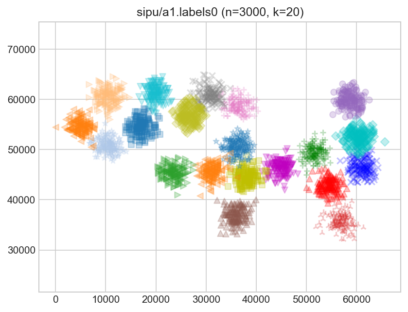
Source: I. Kärkkäinen, P. Fränti, Dynamic local search algorithm
for the clustering problem, Research Report A-2002-6.
Web: https://cs.joensuu.fi/sipu/datasets/
Synthetic 2D data with varying number of vectors and clusters.
There are 150 vectors per cluster.
`labels0` come from the Authors. `0` denotes the noise class (if present).labels0true_k=35, noise= 0, true_g=0.000
label_counts=[150, 150, 150, 150, 150, 150, 150, 150, 150, 150, 150, 150, 150, 150, 150, 150, 150, 150, 150, 150, 150, 150, 150, 150, 150, 150, 150, 150, 150, 150, 150, 150, 150, 150, 150]
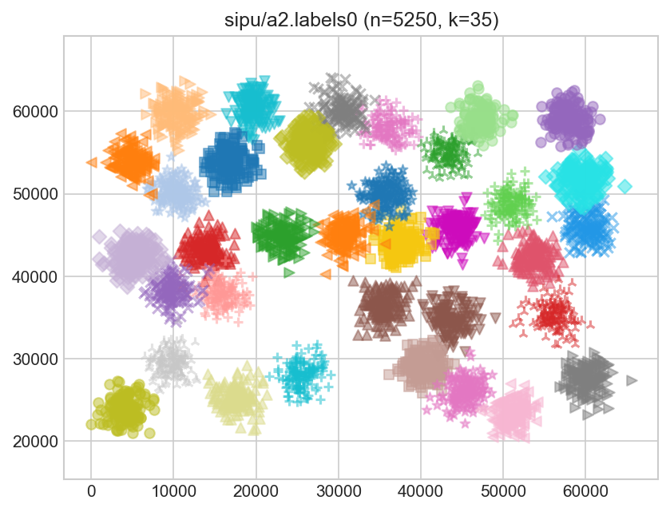
Source: I. Kärkkäinen, P. Fränti, Dynamic local search algorithm
for the clustering problem, Research Report A-2002-6.
Web: https://cs.joensuu.fi/sipu/datasets/
Synthetic 2D data with varying number of vectors and clusters.
There are 150 vectors per cluster.
`labels0` come from the Authors. `0` denotes the noise class (if present).labels0true_k=50, noise= 0, true_g=0.000
label_counts=[150, 150, 150, 150, 150, 150, 150, 150, 150, 150, 150, 150, 150, 150, 150, 150, 150, 150, 150, 150, 150, 150, 150, 150, 150, 150, 150, 150, 150, 150, 150, 150, 150, 150, 150, 150, 150, 150, 150, 150, 150, 150, 150, 150, 150, 150, 150, 150, 150, 150]
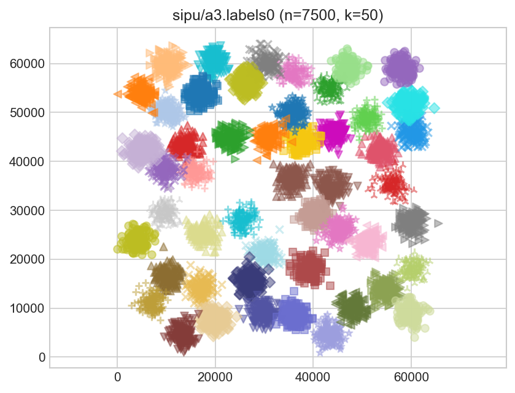
Source: A. Gionis, H. Mannila, P. Tsaparas, Clustering aggregation,
ACM Transactions on Knowledge Discovery from Data (TKDD), 2007, pp. 1-30.
Web: https://cs.joensuu.fi/sipu/datasets/
`labels0` come from the Authors.
`0` denotes the noise class (if present).labels0true_k= 7, noise= 0, true_g=0.454
label_counts=[273, 170, 130, 102, 45, 34, 34]
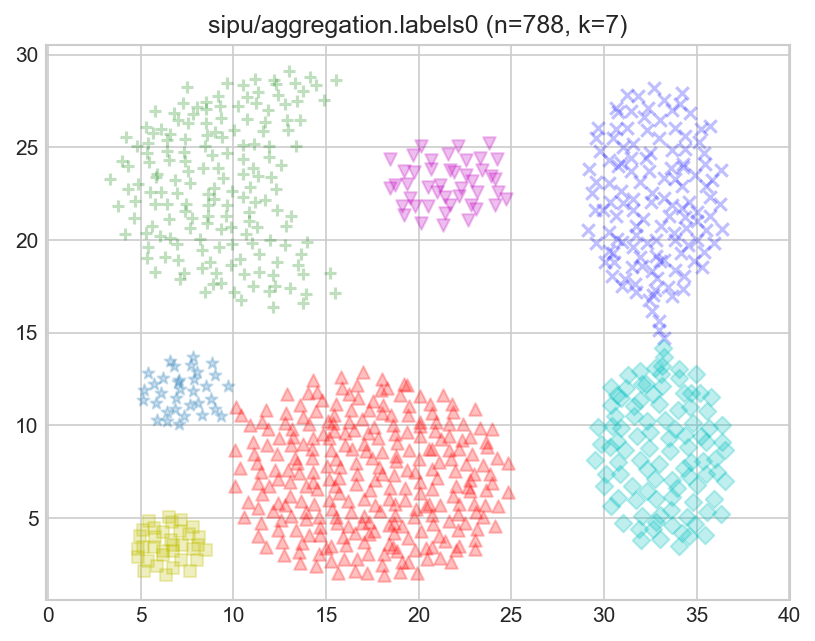
Source: Zhang et al., BIRCH: A new data clustering algorithm and its applications,
Data Mining and Knowledge Discovery, 1 (2), 141-182, 1997.
Web: https://cs.joensuu.fi/sipu/datasets/
`labels0` come from the Authors. `0` denotes the noise class (if present).labels0true_k=100, noise= 0, true_g=0.008
label_counts=[1011, 982, 998, 1013, 1002, 982, 1023, 999, 999, 992, 1001, 1007, 980, 997, 998, 1007, 990, 989, 1028, 989, 993, 1002, 998, 1034, 1016, 979, 1005, 994, 992, 1019, 998, 991, 1007, 973, 996, 999, 994, 988, 1002, 981, 1022, 993, 991, 1019, 996, 1021, 991, 1009, 1009, 998, 995, 1000, 1017, 981, 1012, 998, 1001, 1002, 987, 1005, 1005, 975, 1024, 992, 992, 996, 1013, 972, 1016, 993, 1018, 993, 980, 999, 1011, 1007, 983, 998, 1017, 1001, 986, 1017, 1003, 1022, 1012, 1004, 1018, 1025, 1002, 988, 993, 1003, 996, 991, 995, 983, 1003, 975, 1014, 990]
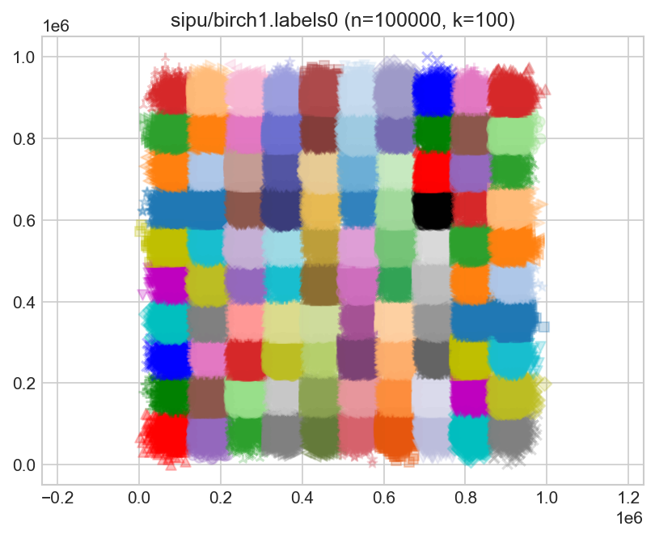
Source: Zhang et al., BIRCH: A new data clustering algorithm and its applications,
Data Mining and Knowledge Discovery, 1 (2), 141-182, 1997.
Web: https://cs.joensuu.fi/sipu/datasets/
`labels0` come from the Authors. `0` denotes the noise class (if present).labels0true_k=100, noise= 0, true_g=0.000
label_counts=[1000, 1000, 1000, 1000, 1002, 997, 999, 1002, 1000, 1000, 1000, 1000, 1000, 1000, 1000, 1000, 999, 1000, 1000, 1000, 1001, 999, 1001, 1000, 1000, 1000, 1000, 1000, 1000, 1000, 1001, 999, 999, 1001, 1000, 1000, 1000, 1000, 1000, 1000, 1001, 1000, 998, 1002, 1001, 998, 1000, 1000, 1000, 1000, 1000, 1000, 1000, 1000, 1001, 998, 1001, 1000, 1000, 1000, 1000, 1000, 1000, 1000, 1000, 1000, 999, 999, 1004, 999, 1000, 999, 1000, 1000, 1000, 1000, 1000, 1000, 1000, 1000, 1001, 997, 1002, 1000, 1000, 1000, 1000, 1000, 1000, 1000, 1000, 1001, 997, 1002, 1000, 1000, 1000, 1000, 1000, 1000]
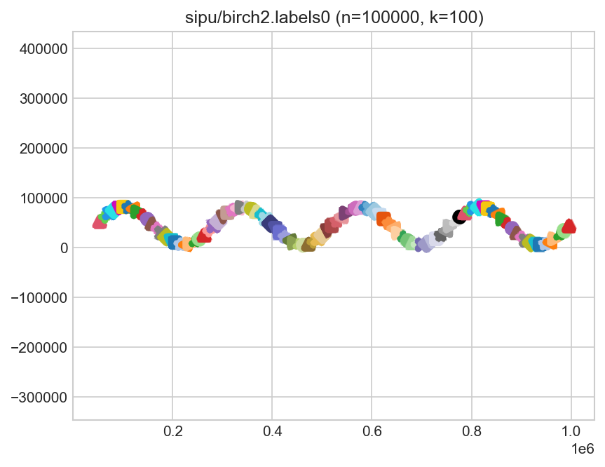
Source: C.T. Zahn, Graph-theoretical methods for detecting and describing
gestalt clusters, IEEE Transactions on Computers C-20(1), 1971, pp. 68-86.
Web: https://cs.joensuu.fi/sipu/datasets/
`labels0` come from the Authors.
`labels1`--`labels4` generated by A. Cena and M. Gagolewski.
`0` denotes the noise class (if present).labels0true_k= 6, noise= 0, true_g=0.440
label_counts=[158, 92, 50, 45, 38, 16]
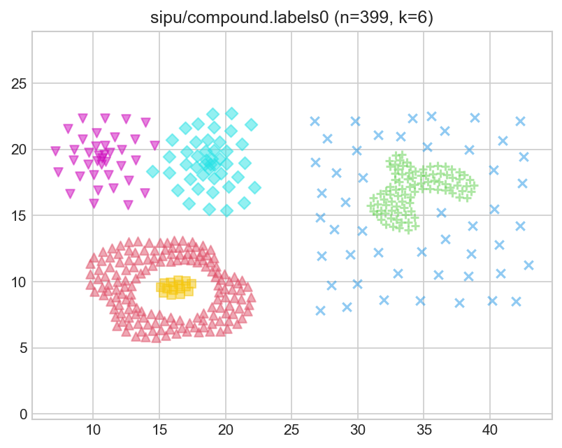
labels1true_k= 4, noise= 0, true_g=0.405
label_counts=[158, 142, 83, 16]
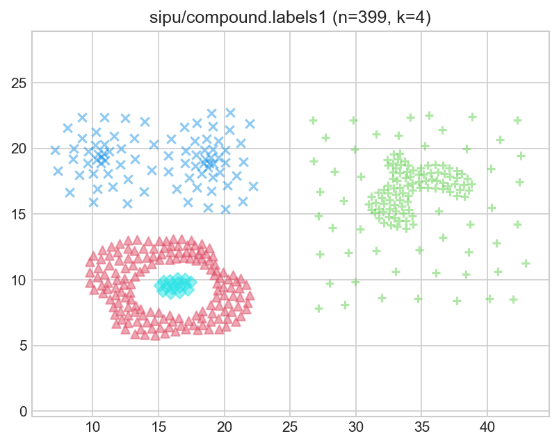
labels2true_k= 5, noise= 50, true_g=0.483
label_counts=[158, 92, 44, 39, 16]
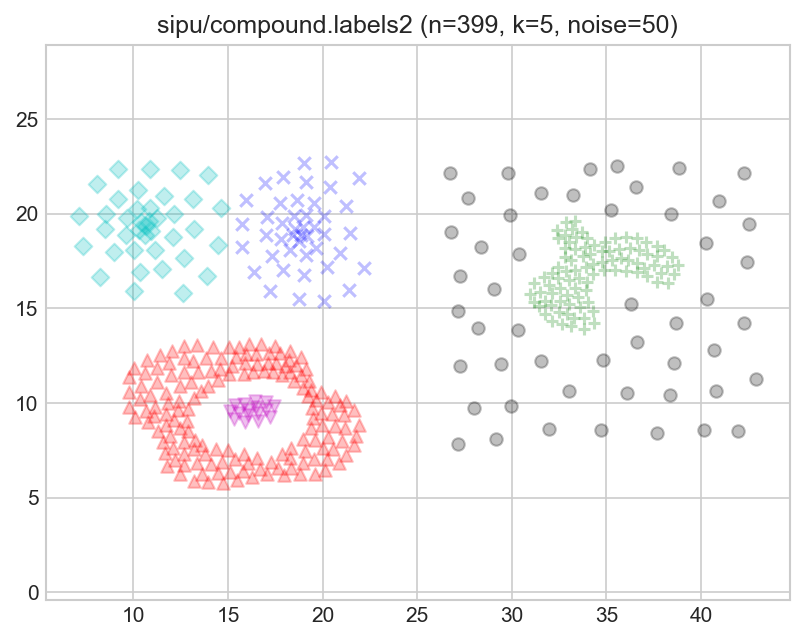
labels3true_k= 4, noise= 50, true_g=0.415
label_counts=[158, 92, 83, 16]
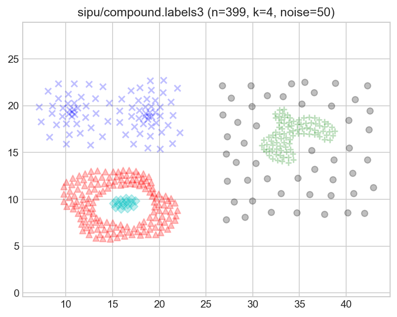
labels4true_k= 5, noise= 0, true_g=0.485
label_counts=[158, 142, 44, 39, 16]
Source: C.J. Veenman, M.J.T. Reinders, E. Backer, A maximum variance cluster
algorithm, IEEE Transactions on Pattern Analysis and Machine Intelligence 24(9),
2002, pp. 1273-1280.
Web: https://cs.joensuu.fi/sipu/datasets/
`labels0` come from the Authors.labels0true_k=31, noise= 0, true_g=0.000
label_counts=[100, 100, 100, 100, 100, 100, 100, 100, 100, 100, 100, 100, 100, 100, 100, 100, 100, 100, 100, 100, 100, 100, 100, 100, 100, 100, 100, 100, 100, 100, 100]
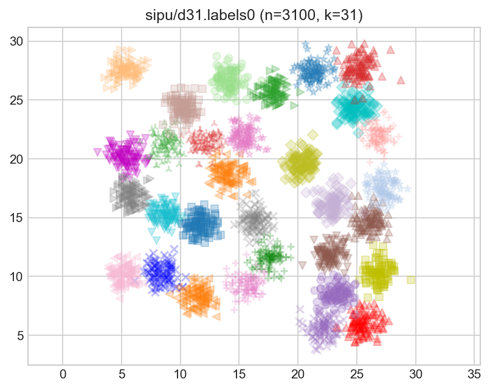
Source: L. Fu, E. Medico, FLAME, a novel fuzzy clustering method for
the analysis of DNA microarray data, BMC Bioinformatics 8, 2007, p. 3.
Web: https://cs.joensuu.fi/sipu/datasets/
`labels0` come from the Authors.
`labels1` generated by A. Cena and M. Gagolewski.
`0` denotes the noise class (if present).labels0true_k= 2, noise= 0, true_g=0.275
label_counts=[153, 87]
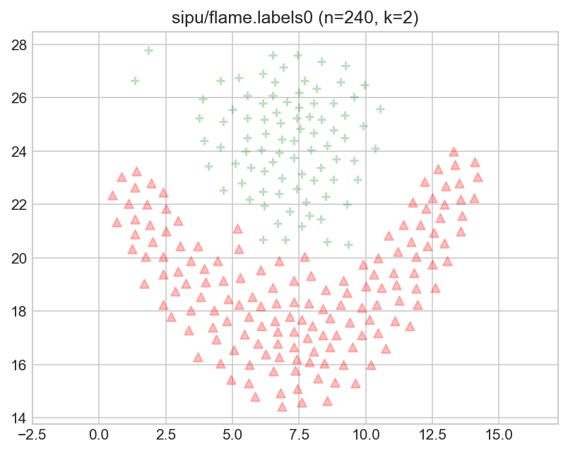
labels1true_k= 2, noise= 12, true_g=0.272
label_counts=[145, 83]
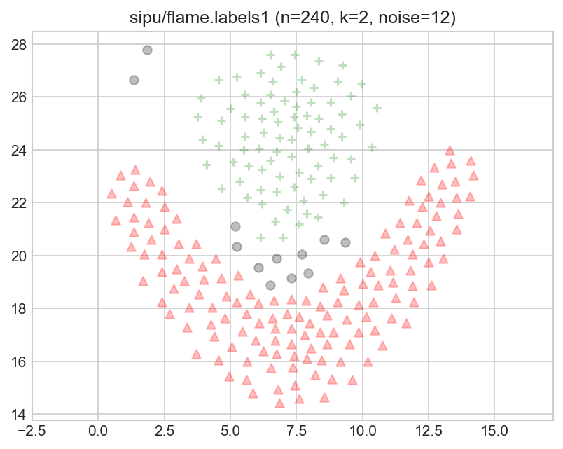
Source: A. Jain, M. Law, Data clustering: A user’s dilemma,
Lecture Notes in Computer Science 3776, 2005, pp. 1-10.
Web: https://cs.joensuu.fi/sipu/datasets/
`labels0` come from the Authors. `0` denotes the noise class (if present).labels0true_k= 2, noise= 0, true_g=0.480
label_counts=[276, 97]
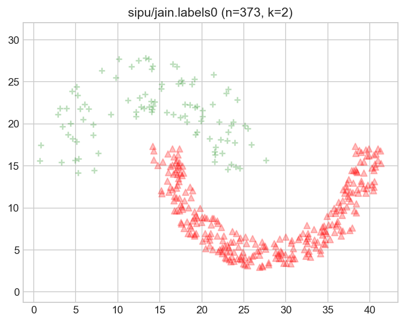
Source: H. Chang, D.Y. Yeung, Robust path-based spectral clustering,
Pattern Recognition 41(1), 2008, pp. 191-203.
Web: https://cs.joensuu.fi/sipu/datasets/
`labels0` come from the Authors.
`labels1` generated by M. Gagolewski.
`0` denotes the noise class (if present).labels0true_k= 3, noise= 0, true_g=0.057
label_counts=[110, 97, 93]
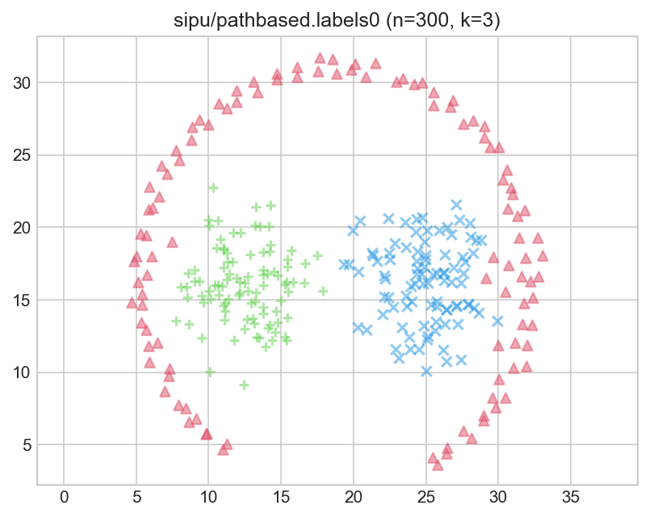
labels1true_k= 4, noise= 0, true_g=0.196
label_counts=[98, 94, 56, 52]
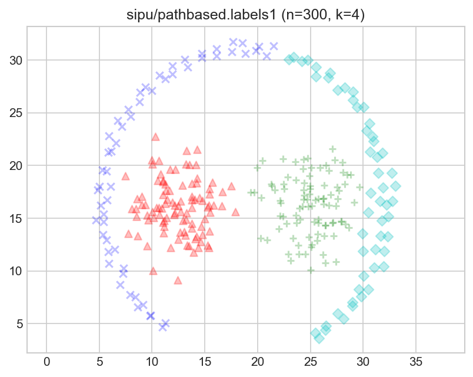
Source: C.J. Veenman, M.J.T. Reinders, E. Backer, A maximum variance cluster
algorithm, IEEE Transactions on Pattern Analysis and Machine Intelligence 24(9),
2002, pp. 1273-1280.
Web: https://cs.joensuu.fi/sipu/datasets/
`labels0` come from the Authors.
`labels1`, `labels2` generated by A. Cena and M. Gagolewski.
`0` denotes the noise class (if present).labels0true_k=15, noise= 0, true_g=0.000
label_counts=[40, 40, 40, 40, 40, 40, 40, 40, 40, 40, 40, 40, 40, 40, 40]
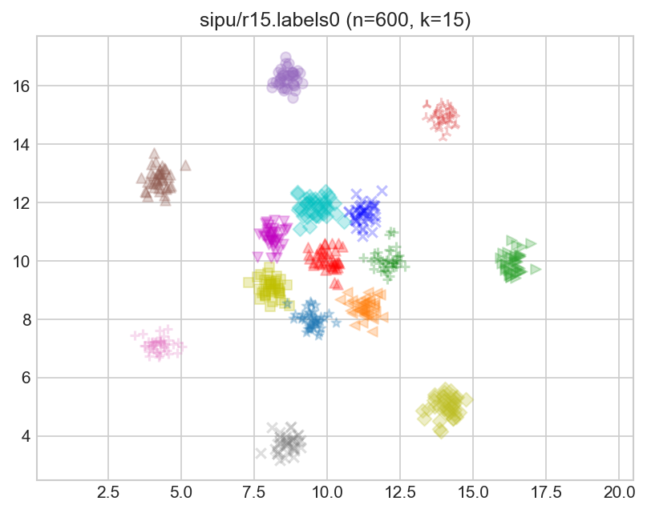
labels1true_k= 9, noise= 0, true_g=0.400
label_counts=[280, 40, 40, 40, 40, 40, 40, 40, 40]
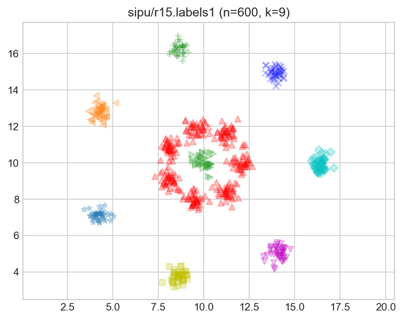
labels2true_k= 8, noise= 0, true_g=0.467
label_counts=[320, 40, 40, 40, 40, 40, 40, 40]
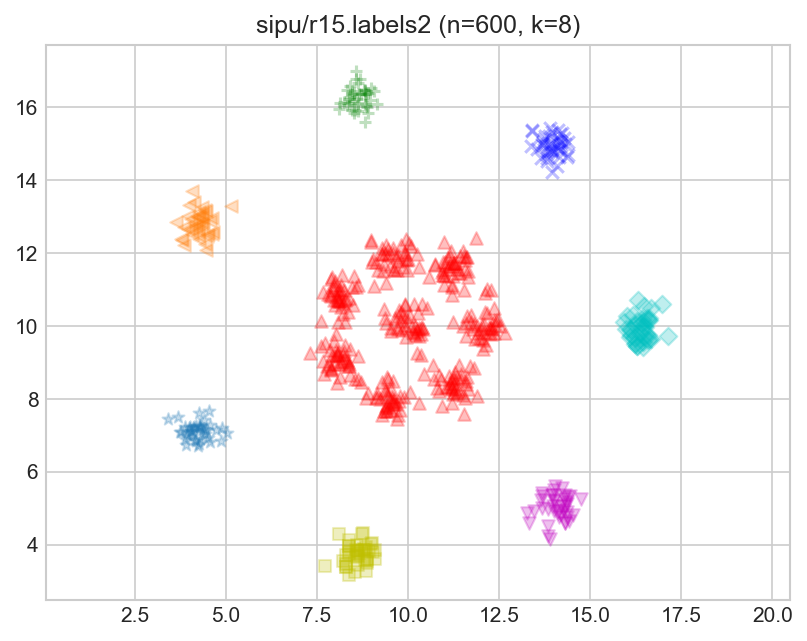
Source: P. Fränti, O. Virmajoki,
Iterative shrinking method for clustering problems,
Pattern Recognition, 39(5), 2006, pp. 761-765.
Web: https://cs.joensuu.fi/sipu/datasets/
Synthetic 2D data with n=5000 vectors and K=15 Gaussian clusters with different
degree of cluster overlapping.
`labels0` come from the Authors. `0` denotes the noise class (if present).labels0true_k=15, noise= 0, true_g=0.028
label_counts=[300, 316, 314, 318, 325, 326, 334, 338, 341, 342, 347, 349, 350, 350, 350]
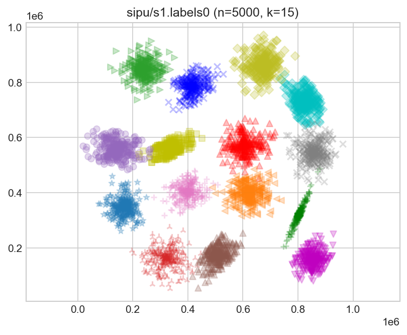
Source: P. Fränti, O. Virmajoki,
Iterative shrinking method for clustering problems,
Pattern Recognition, 39(5), 2006, pp. 761-765.
Web: https://cs.joensuu.fi/sipu/datasets/
Synthetic 2D data with n=5000 vectors and K=15 Gaussian clusters with different
degree of cluster overlapping.
`labels0` come from the Authors. `0` denotes the noise class (if present).labels0true_k=15, noise= 0, true_g=0.027
label_counts=[300, 317, 315, 320, 321, 329, 334, 333, 340, 345, 346, 350, 350, 350, 350]
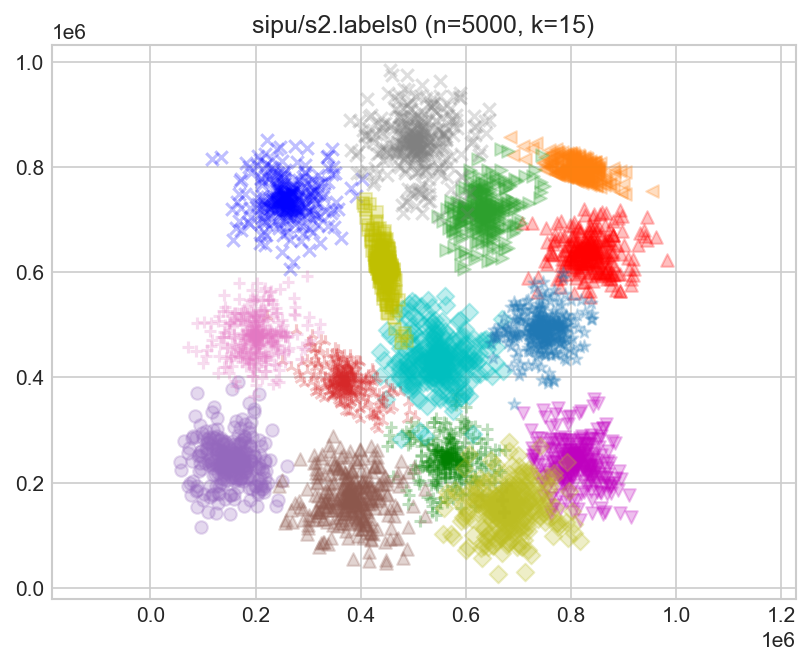
Source: P. Fränti, O. Virmajoki,
Iterative shrinking method for clustering problems,
Pattern Recognition, 39(5), 2006, pp. 761-765.
Web: https://cs.joensuu.fi/sipu/datasets/
Synthetic 2D data with n=5000 vectors and K=15 Gaussian clusters with different
degree of cluster overlapping.
`labels0` come from the Authors. `0` denotes the noise class (if present).labels0true_k=15, noise= 0, true_g=0.026
label_counts=[300, 321, 316, 323, 322, 331, 333, 337, 334, 337, 346, 350, 350, 350, 350]
Source: P. Fränti, O. Virmajoki,
Iterative shrinking method for clustering problems,
Pattern Recognition, 39(5), 2006, pp. 761-765.
Web: https://cs.joensuu.fi/sipu/datasets/
Synthetic 2D data with n=5000 vectors and K=15 Gaussian clusters with different
degree of cluster overlapping.
`labels0` come from the Authors. `0` denotes the noise class (if present).labels0true_k=15, noise= 0, true_g=0.026
label_counts=[300, 316, 327, 320, 323, 324, 327, 336, 337, 344, 347, 350, 349, 350, 350]
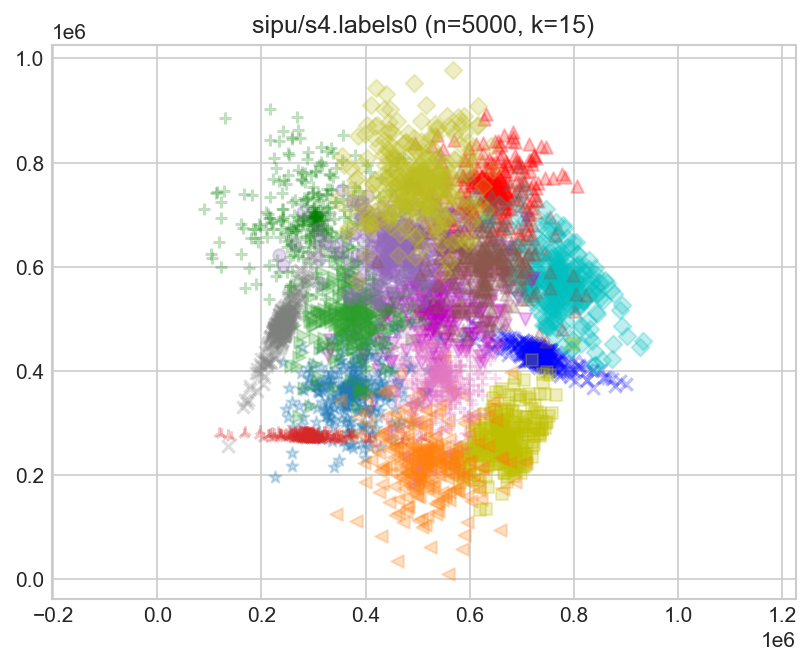
Source: H. Chang, D.Y. Yeung, Robust path-based spectral clustering,
Pattern Recognition 41(1), 2008, pp. 191-203.
Web: https://cs.joensuu.fi/sipu/datasets/
`labels0` come from the Authors. `0` denotes the noise class (if present).labels0true_k= 3, noise= 0, true_g=0.016
label_counts=[101, 105, 106]
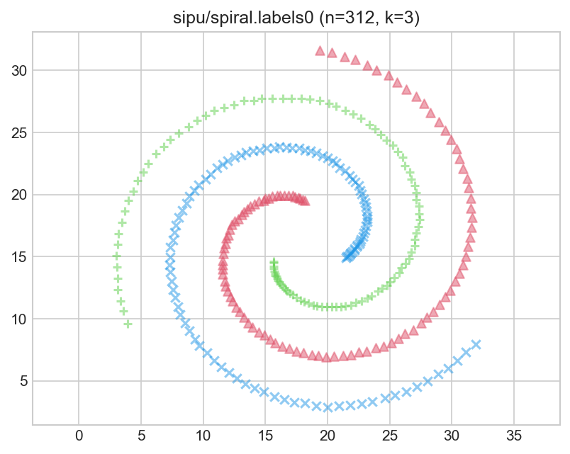
Source: M. Rezaei, P. Fränti, Set-matching methods for external cluster
validity, IEEE Trans. on Knowledge and Data Engineering, 28(8), pp. 2173-2186, 2016.
Web: https://cs.joensuu.fi/sipu/datasets/
`labels0` come from the Authors. `0` denotes the noise class (if present).labels0true_k= 8, noise= 0, true_g=0.626
label_counts=[2000, 2000, 2000, 100, 100, 100, 100, 100]
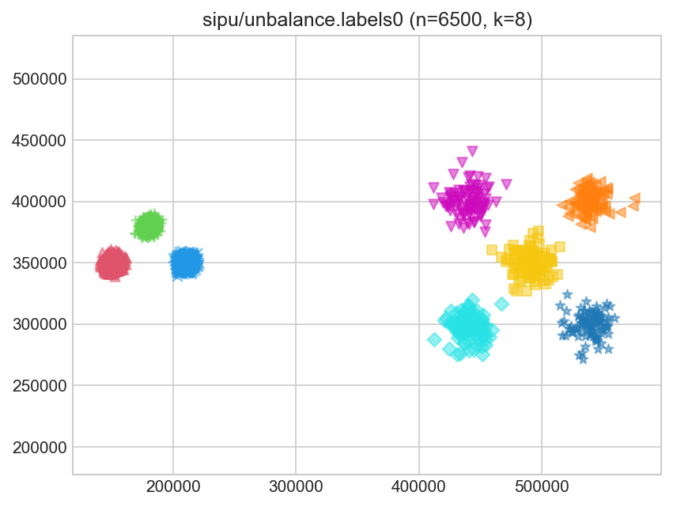
Synthetic 2D data with worm-like shapes
Source: S. Sieranoja and P. Fränti,
Fast and general density peaks clustering,
Pattern Recognition Letters, 128, 551-558, 2019.
Web: https://cs.joensuu.fi/sipu/datasets/
`labels0` come from the Authors.labels0true_k=35, noise= 0, true_g=0.283
label_counts=[3120, 4560, 4368, 4008, 3648, 3144, 1992, 1008, 4464, 936, 2904, 1296, 2496, 2328, 4968, 5880, 3696, 4896, 2160, 2160, 3048, 5640, 1752, 1176, 4968, 4920, 768, 2472, 1392, 1752, 3840, 2664, 840, 3336, 3000]
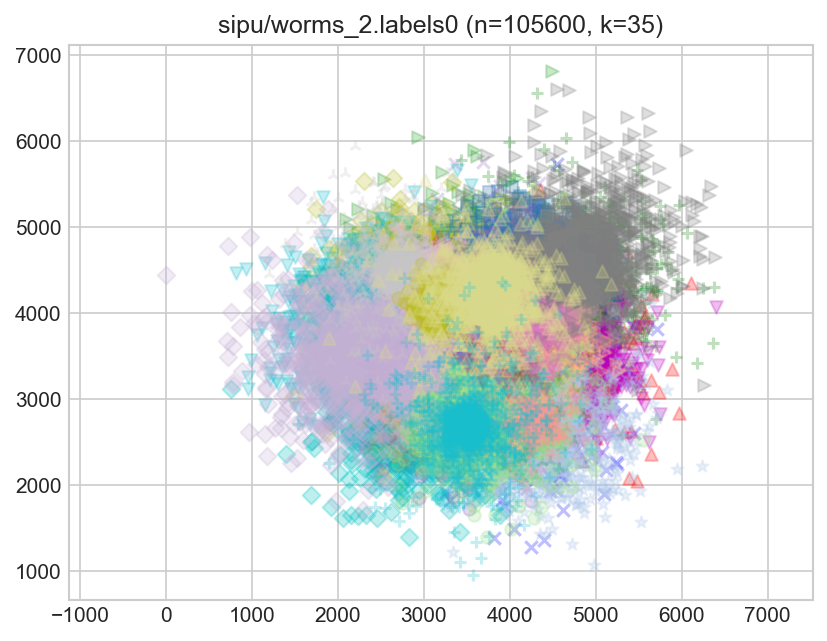
Synthetic 64D data with worm-like shapes
Source: S. Sieranoja and P. Fränti,
Fast and general density peaks clustering,
Pattern Recognition Letters, 128, 551-558, 2019.
Web: https://cs.joensuu.fi/sipu/datasets/
`labels0` come from the Authors.labels0true_k=25, noise= 0, true_g=0.000
label_counts=[4200, 4200, 4200, 4200, 4200, 4200, 4200, 4200, 4200, 4200, 4200, 4200, 4200, 4200, 4200, 4200, 4200, 4200, 4200, 4200, 4200, 4200, 4200, 4200, 4200]
(preview generation suppressed)